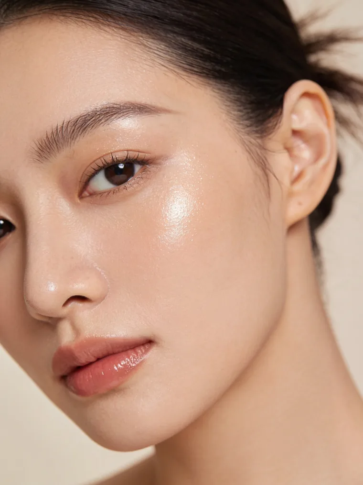

Hidratare profundă
350lei
de la · per ședință
Programează →

Față · Strălucire & hidratare
Ten obosit, deshidratat, fără luminozitate? Îți reechilibrăm pielea și îi redăm strălucirea naturală cu tratamente faciale profesionale, adaptate exact tipului tău de ten.
De ce își pierde tenul strălucirea

Tenul obosit, gri sau fără viață apare când pielea e deshidratată, încărcată cu celule moarte și cu bariera cutanată slăbită, din cauza stresului, lipsei de îngrijire, soarelui sau a unui ritm alert.
Tratamentele faciale profesionale lucrează exact pe aceste cauze: curăță, exfoliază blând, rehidratează în profunzime și hrănesc pielea cu ingrediente active. Astfel încât tenul să-și recapete luminozitatea naturală.
De unde vine strălucirea
Tratamente recomandate
Planul exact îl stabilim la consultația gratuită, în funcție de tipul tău de ten. Mai jos, opțiunile cel mai des recomandate (preț de pornire, per ședință).
Cum decurge
O cură scurtă, urmată de întreținere. Strălucirea se vede de la prima ședință și se construiește în timp.
Analiză de ten + plan
Evaluăm tipul de ten și nevoile pielii și alegem împreună tratamentul potrivit. Gratuit.
Primul tratament, glow imediat
A doua ședință
A treia ședință
ten vizibil mai luminos*A patra ședință, finalul curei
O ședință la 4-6 săptămâni
Menții strălucirea pe termen lung; ajustăm ritmul în funcție de tenul tău.
*În majoritatea cazurilor. Rezultatele variază în funcție de tipul de ten, stilul de viață și respectarea curei recomandate.
Întrebări frecvente
Ce spun clientele
5,0 / 5
★★★★★ · 300+ recenzii Google
Primul pas e gratuit